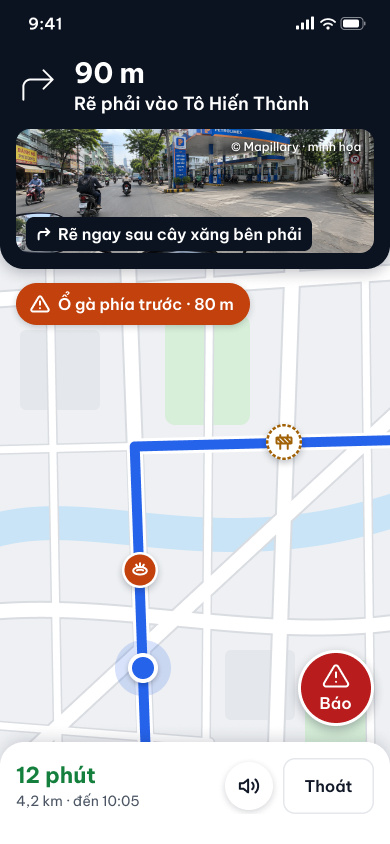
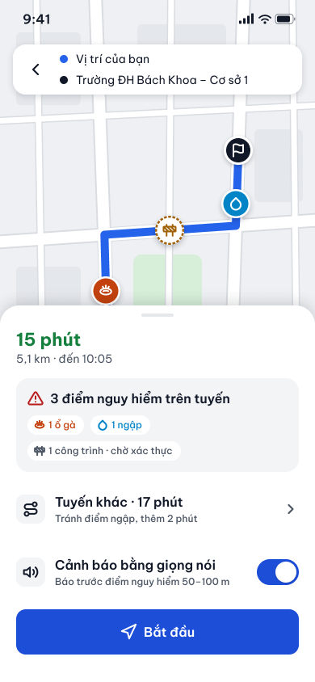
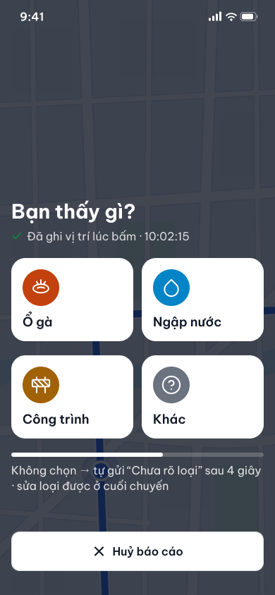
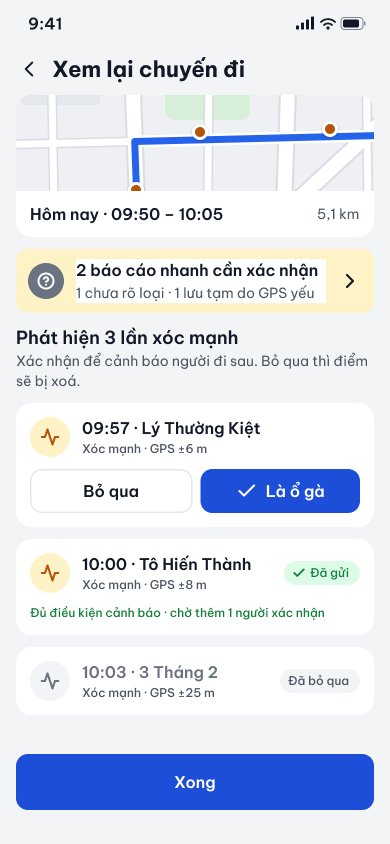

Bản mẫu tương tác · v0.3
Thấy trước
đường xấu – đi an tâm hơn.
Ổ gà, đoạn ngập hay một ngã rẽ khó thấy có thể khiến bạn trở tay không kịp. StreetEye giúp người đi xe máy xem trước mặt đường và nghe cảnh báo khi đến gần.

StreetEye trong một chuyến đi
Chọn từng chặng để xem giao diện trên tuyến minh họa đến Đại học Bách khoa, Cơ sở 1.



Quá trình thiết kế
Khi các ghim che nhau trên bản đồ
Trong lần thử đầu với ba người tham gia, một người cho biết các ghim lớn, nằm sát nhau nên khó đọc. Nhóm đã gom các điểm gần nhau khi thu nhỏ bản đồ và cho phép phóng to để xem từng điểm.
Đọc case study trên Behance